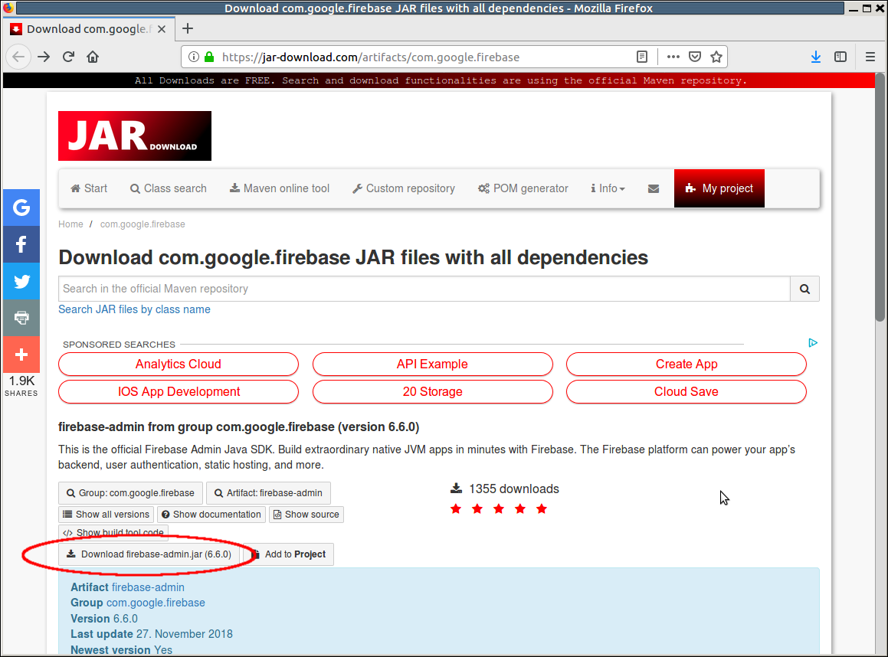
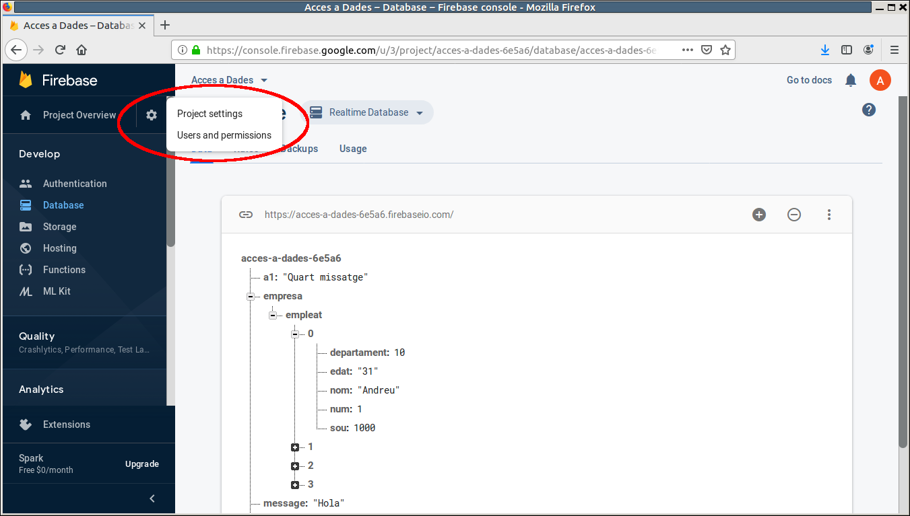
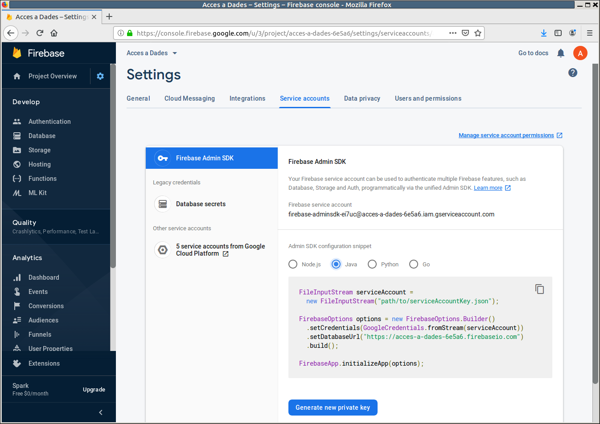

3.2.1 RD-IntelliJ: Connexió des de Kotlin
Drivers necessaris
L'accés des de IntelliJ a Firebase no és senzill. És més complicat que accedir des d'Android, en contra del que cabria esperar.
Concretament ens haurem de baixar molts .jar. En canvi en Android ho tindrem tot disponible, ja que els drivers estan incorporats.
Són tants els drivers que ens construirem una llibreria per a poder incorporar-los després còmodament als nostres projectes. Ens els podem baixar des del següent enllaç: https://jar-download.com/artifacts/com.google.firebase

Una vegada baixat i descomprimit el contingut en una carpeta, construiu-vos una llibreria anomenada Firebase que incorpore tots els jar. El següent vídeo mostra com fer-ho:
Configuració
El primer que hem de fer és preparar el nostre projecte per a que puga accedir a l'aplicació que hem creat en Firebase. En l'entron de IntelliJ ens baixarem un fitxer json on estarà la clau per a accedir a la nostra aplicació. Hem d'anar a la configuració del projecte:

I dins de la configuració anar a la pestanya Cuentas de servicio (Service Accounts). Ahí veurem uns exemples d'utilització (a nosaltres ens interessa Java), i baix de tot un botó per a Generar una nova clau privada:

Ens baixarà un fitxer json que haurem de guardar a l'arrel del projecte. Després, com deia l'exemple, col·loquem el següent per a un accés correcte:
FileInputStream serviceAccount = new FileInputStream("path/to/serviceAccountKey.json"); FirebaseOptions options = new FirebaseOptions.Builder() .setCredentials(GoogleCredentials.fromStream(serviceAccount)) .setDatabaseUrl("https://acces-a-dades-6e5a6.firebaseio.com") .build(); FirebaseApp.initializeApp(options);
No us oblideu de substituir el nom del fitxer json. També heu de tenir en compte que la URL de la base de dades serà diferent per a cadascú de nosaltres.
Ho tenim escrit en Java, i per tant haurem de fer la transformació a Kotlin. i quedarà així (ho he particularitzat al meu projecte, però recordeu que heu de canviar el nom del fitxer json i la URL pels vostres):
val serviceAccount = FileInputStream("acces-a-dades-6e5a6-firebase-adminsdk-ei7uc-fcf7da56aa.json")
val options = FirebaseOptions.Builder()
.setCredentials(GoogleCredentials.fromStream(serviceAccount))
.setDatabaseUrl("https://acces-a-dades-6e5a6.firebaseio.com").build()
FirebaseApp.initializeApp(options)Referència a la Base de Dades i a les dades concretes a les quals volem accedir
Ens haurem de crear un objecte FirebaseDatabase, que serà una referència a tota la Base de Dades:
val database = FirebaseDatabase.getInstance()
A partir d'ella podríem fer referència a una parella clau-valor que estiga a l'arrel, com quan havíem creat a1 ( però recordeu que ara no existeix):
val refA1 = database.getReference("a1")
També podríem fer referència a una parella clau-valor que no estiga en l'arrel de la Base de Dades. Senzillament posaríem la ruta des de l'arrel. Per exemple, per a accedir al nom del primer empleat de l'empresa que tenim guardat, ho faríem així:
val empleat1 = database.getReference("empresa/empleat/0/nom")
En els casos anteriors hem optat per agafar parelles clau-valor, bé a l'arrel o més cap a dins de l'estructura JSON. Però en definitiva és una parella clau-valor.
També podem optar per agafar l'estructura JSON i treballar amb ella, com vam fer en el Tema 3, quan vam treballar amb l'estructura JSON.
val empresa = database.getReference("empresa")
D'aquesta manera, en la qual agafem tota l'estructura, tindrem dues maneres de treballar posteriorment per a accedir més avall en l'estructura:
- Passar-lo a objectes i arrays de JSON, i treballar com vam fer en el Tema 3. Molt còmode, sobretot quan es tracta d'operacions de lectura
- Treballar directament amb mètodes de Firebase que ens permeten accedir bé a tots els fills d'una estructura, bé a un fill en concret
Ho mostrarem en els exemples posteriors.
Llicenciat sota la Llicència Creative Commons Reconeixement NoComercial SenseObraDerivada 4.0